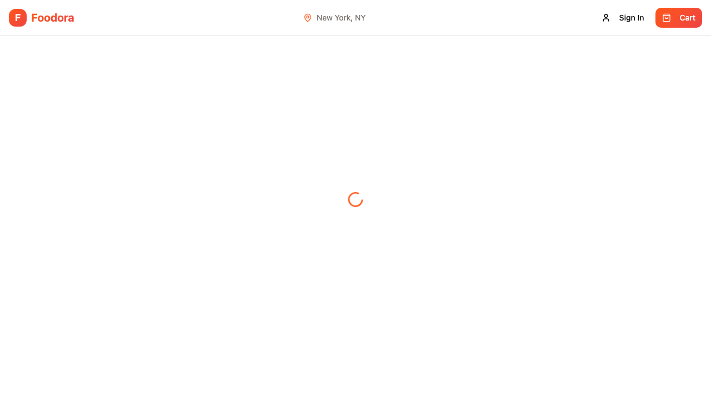
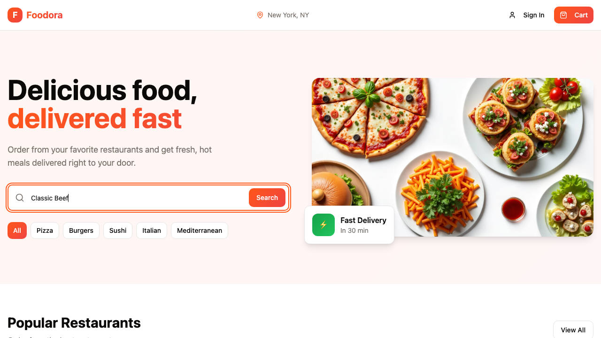
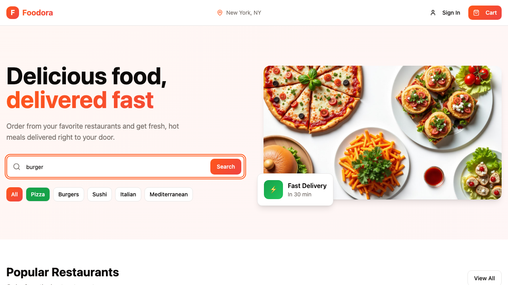
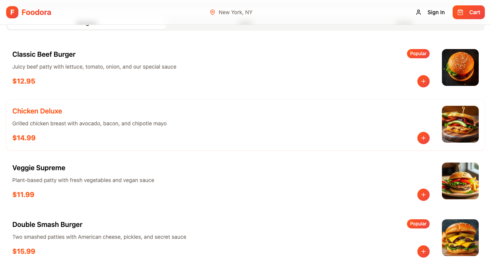
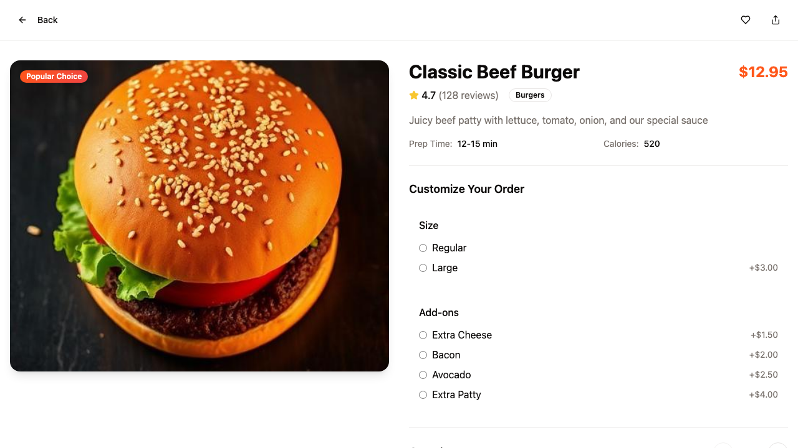
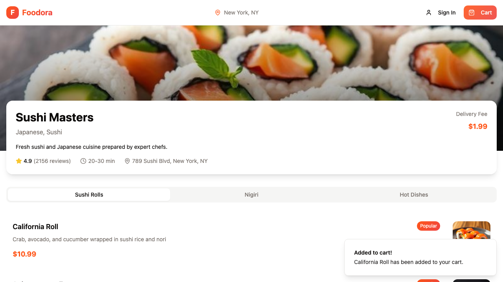
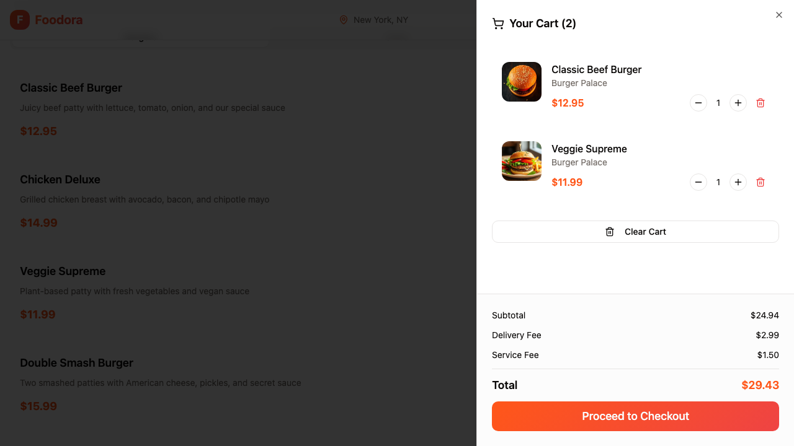
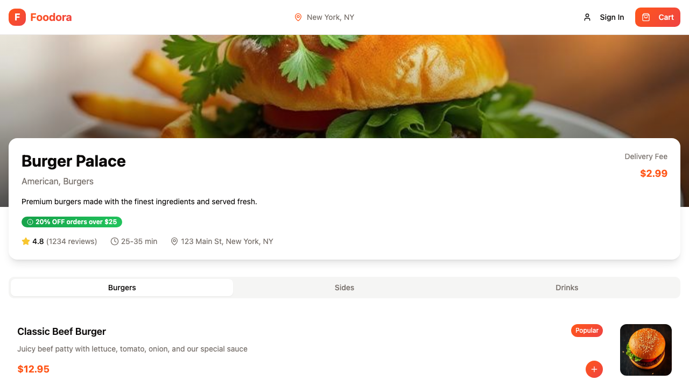
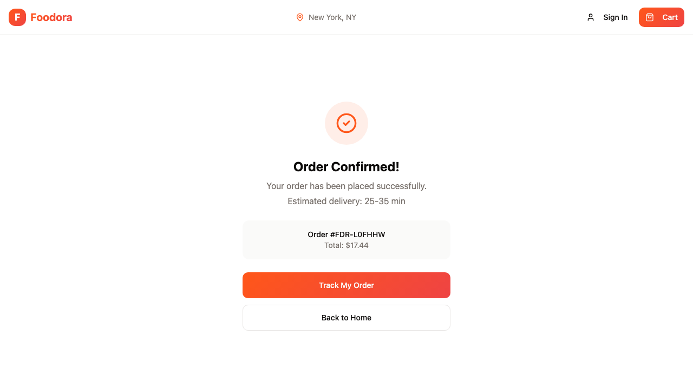
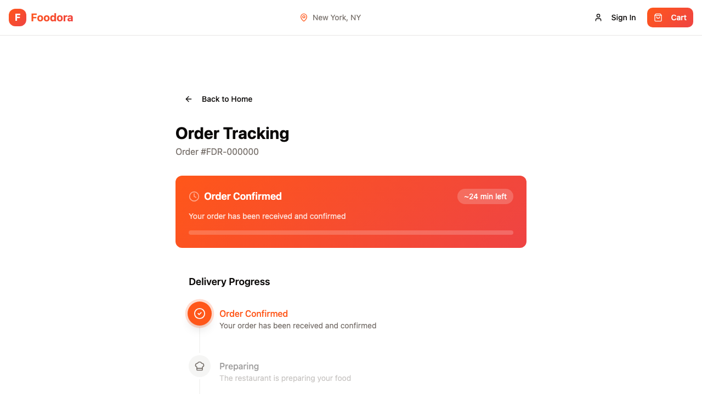

Bugs and red tests
fail — bug FD-01 · an unavailable restaurant cannot be opened
Spec says: A restaurant that does not deliver to the current address is shown greyed out with a *Not available at your address* badge, and the subtitle counts them (*1 don't deliver there*). It cannot be opened.
The app did: The unavailable restaurant's card is a normal link: selecting it opens /restaurant/<id> with a full menu that can be added to the cart.
Error: selecting an unavailable card must not open its page
expect(received).toBe(expected) // Object.is equality
Expected: false
Received: true

fail — bug FD-02 · search finds restaurants by restaurant name and by dish name
Spec says: The search box finds restaurants by restaurant name or by dish name. *"Classic Beef"* finds the restaurant that serves the Classic Beef Burger.
The app did: Searching "Classic Beef" shows No restaurants found: search matches restaurant names and cuisines, not dish names.
Error: expect(received).toContain(expected) // indexOf
Expected value: "Burger Palace"
Received array: []

fail — bug FD-02 · a search and a cuisine chip apply together
Spec says: A search and a selected cuisine chip apply together: with Pizza selected, searching *burger* shows only restaurants that match both.
The app did: With Pizza selected, searching "burger" drops the Pizza filter and shows the burger results; the last action wins (a chip even overwrites the typed search).
Error: expect(received).toEqual(expected) // deep equality
- Expected - 1
+ Received + 3
- Array []
+ Array [
+ "Burger Palace",

fail — bug FD-03 · every button on the restaurant page has an accessible name
Spec says: Every button can be used with a screen reader: each one has an accessible name that says what it does, including icon-only buttons such as quick-add.
The app did: Every quick-add button on the restaurant page is an icon-only button with no accessible name.
Error: expect(locator).toHaveAccessibleName(expected) failed
Locator: getByRole('button').nth(2)
Expected pattern: /\S/
Received string: ""
Timeout: 5000ms
Call log:

fail — bug FD-04 · several add-ons can be picked together
Spec says: Add-ons — pick any combination, including none (for example *Extra Cheese* and *Bacon*).
The app did: Add-ons are radio buttons: picking Bacon unchecks Extra Cheese, so only one add-on can be chosen.
Error: expect(locator).toBeChecked() failed
Locator: getByRole('radio', { name: /^Extra Cheese/ })
Expected: checked
Received: unchecked
Timeout: 5000ms
Call log:
fail — bug FD-04 · cart is reachable from the dish page
Spec says: The cart is reachable from this page, the same as from every other page in the order flow.
The app did: The dish page has no header and no Cart button; the cart cannot be opened from it.
Error: expect(locator).toBeVisible() failed
Locator: getByRole('button', { name: /^Cart\b/ })
Expected: visible
Timeout: 5000ms
Error: element(s) not found
Call log:

fail — bug FD-05 · delivery fee matches the restaurant and free is zero
Spec says: The Delivery Fee is the fee the restaurant advertises — Free means $0.00.
The app did: The cart charges $2.99 delivery for every restaurant: Pizza Corner advertises Free, Sushi Masters $1.99, Mediterranean Delight $3.49.
Error: Mediterranean Delight advertises $3.49
expect(received).toBe(expected) // Object.is equality
Expected: 349
Received: 299

fail — bug FD-05 · promotion takes 20% off above $25 and not below
Spec says: *20% OFF orders over $25* takes 20 % off the subtotal once it passes $25, and the discount shows as its own line.
The app did: Burger Palace (20% OFF orders over $25) never gets a discount: subtotals $25.90, $36.93 and $40.93 show no discount line and the full total.
Error: expect(locator).toHaveCount(expected) failed
Locator: getByRole('dialog').getByText(/discount|promo|% off/i).filter({ hasNotText: /orders over/i })
Expected: 1
Received: 0
Timeout: 5000ms
Call log:

fail — bug FD-05 · empty cart says so and offers no checkout
Spec says: An empty cart says so, offers a way back to the restaurants, and offers no way to check out.
The app did: Opened on a restaurant page, the empty cart's Continue Shopping only closes the panel: the customer stays on /restaurant/<id> and is not taken back to the restaurant list.
Error: expect(page).toHaveURL(expected) failed
Expected pattern: /\/$/
Received string: "https://foodora.lovable.app/restaurant/1"
Timeout: 5000ms
Call log:
- Expect "toHaveURL" with timeout 5000ms

fail — bug FD-05 · cart survives a page reload
Spec says: The cart survives a page reload: refreshing the browser does not lose the order.
The app did: Reloading the page empties the cart; nothing is kept in localStorage or sessionStorage.
Error: expect(received).toBe(expected) // Object.is equality
Expected: 1
Received: 0
Call Log:
- Timeout 5000ms exceeded while waiting on the predicate

fail — bug FD-06 · place order is refused while a required field is empty
Spec says: Place Order only places the order when every required field is filled in. Otherwise no order is placed, and each missing field shows a message saying what is needed.
The app did: The app places the order with a required field empty (with Full Name empty, even with the whole form empty) and shows no message for the missing field.
Error: no order with Full Name empty
expect(locator).toHaveCount(expected) failed
Locator: getByRole('heading', { name: 'Order Confirmed!' })
Expected: 0
Received: 1
Timeout: 5000ms

fail — bug FD-07 · unknown order number shows no tracking page
Spec says: Tracking works only for real orders. An order number that was never placed does not show a tracking page.
The app did: A never-placed order number (/order/FDR-000000) shows a full tracking page with all five stages and Total Paid $0.00.
Error: expect(locator).toHaveCount(expected) failed
Locator: getByText(/total paid/i)
Expected: 0
Received: 1
Timeout: 5000ms
Call log:

fail — bug FD-07 · total paid cannot be changed through the address
Spec says: Total paid is the amount of the placed order. It cannot be changed by editing the address in the browser.
The app did: Total Paid is read from the ?total= query: editing it to 0.01 shows $0.01, removing it shows $0.00. Nothing is kept in localStorage.
Error: with ?total=0.01
with ?total=0.01
expect(received).toBe(expected) // Object.is equality
Expected: 1744
Received: 1
Coverage by story
FD-01 Browse restaurants 5 pass1 bug
| Status | Rule | Test |
|---|
| pass |
Card shows name, cuisines, rating, delivery time range, delivery fee (or Free) Spec: Each restaurant card shows the name, the cuisines, the rating, the delivery time range and the delivery fee (or Free). |
FD-01 · each restaurant card shows name, cuisines, rating, delivery time and fee fd-01-browse-restaurants.spec.ts:5 |
| pass |
Card shows the current promotion when it has one Spec: A card shows the restaurant's current promotion when it has one — for example *20% OFF orders over $25*. |
FD-01 · a card shows the restaurant's current promotion fd-01-browse-restaurants.spec.ts:30 |
| pass |
Selecting a card opens that restaurant's page Spec: Selecting a card opens that restaurant's page. |
FD-01 · selecting a card opens that restaurant's page fd-01-browse-restaurants.spec.ts:74 |
| pass |
View All shows the full list of restaurants Spec: View All shows the full list of restaurants. |
FD-01 · view all shows the full list of restaurants fd-01-browse-restaurants.spec.ts:89 |
| pass |
Undeliverable restaurant greyed out with Not available badge; subtitle counts them Spec: A restaurant that does not deliver to the current address is shown greyed out with a *Not available at your address* badge, and the subtitle counts them (*1 don't deliver there*). |
FD-01 · an undeliverable restaurant is greyed out, badged and counted in the subtitle fd-01-browse-restaurants.spec.ts:105 |
| fail — bug |
An unavailable restaurant cannot be opened Spec: A restaurant that does not deliver to the current address is shown greyed out with a *Not available at your address* badge, and the subtitle counts them (*1 don't deliver there*). It cannot be opened. |
FD-01 · an unavailable restaurant cannot be opened fd-01-browse-restaurants.spec.ts:137 |
FD-02 Search and filter 5 pass2 bug
| Status | Rule | Test |
|---|
| fail — bug |
Search finds by restaurant name or dish name ("Classic Beef") Spec: The search box finds restaurants by restaurant name or by dish name. *"Classic Beef"* finds the restaurant that serves the Classic Beef Burger. |
FD-02 · search finds restaurants by restaurant name and by dish name fd-02-search-and-filter.spec.ts:17 |
| pass |
Search ignores case (burger = BURGER) Spec: Search ignores upper and lower case: *burger* and *BURGER* give the same result. |
FD-02 · search ignores upper and lower case fd-02-search-and-filter.spec.ts:64 |
| pass |
Results update while typing; Search button gives the same result Spec: Results update while the customer types; pressing Search gives the same result. |
FD-02 · results update while typing and the search button gives the same result fd-02-search-and-filter.spec.ts:81 |
| pass |
Cuisine chips show only restaurants serving that cuisine Spec: The cuisine chips (All, Pizza, Burgers, Sushi, Italian, Mediterranean) show only restaurants serving that cuisine. |
FD-02 · a cuisine chip shows only restaurants serving that cuisine fd-02-search-and-filter.spec.ts:104 |
| pass |
All shows every restaurant Spec: All shows every restaurant. |
FD-02 · the all chip shows every restaurant fd-02-search-and-filter.spec.ts:130 |
| fail — bug |
Search and chip apply together (Pizza + "burger") Spec: A search and a selected cuisine chip apply together: with Pizza selected, searching *burger* shows only restaurants that match both. |
FD-02 · a search and a cuisine chip apply together fd-02-search-and-filter.spec.ts:145 |
| pass |
Nothing matches → No restaurants found with a hint Spec: When nothing matches, the page says so — *No restaurants found* — with a hint to try another search or filter. |
FD-02 · no match shows no restaurants found with a hint fd-02-search-and-filter.spec.ts:178 |
FD-03 Restaurant menu 5 pass1 bug
| Status | Rule | Test |
|---|
| pass |
Restaurant page shows name, cuisines, rating, delivery time, delivery fee and promotion Spec: the restaurant's name, cuisines, rating, delivery time, delivery fee and promotion; |
FD-03 · restaurant page shows name, cuisines, rating, delivery time, fee and promotion fd-03-restaurant-menu.spec.ts:5 |
| pass |
Menu is grouped into category tabs (Burgers, Sides, Drinks) Spec: the menu, grouped into category tabs (for example *Burgers*, *Sides*, *Drinks*); |
FD-03 · menu is grouped into category tabs fd-03-restaurant-menu.spec.ts:37 |
| pass |
Each dish shows name, short description, price and a quick-add + button Spec: for each dish: name, short description and price, and a quick-add + button. |
FD-03 · each dish shows name, description, price and a quick-add button fd-03-restaurant-menu.spec.ts:60 |
| pass |
Quick-add puts one of that dish in the cart, confirms it, header cart count goes up by one Spec: Quick-add puts one of that dish into the cart and confirms it. The cart count in the header goes up by one. |
FD-03 · quick-add puts one dish in the cart, confirms it and raises the cart count by one fd-03-restaurant-menu.spec.ts:87 |
| pass |
Selecting the dish opens its detail page Spec: Selecting the dish itself opens its detail page (FD-04). |
FD-03 · selecting a dish opens its detail page fd-03-restaurant-menu.spec.ts:116 |
| fail — bug |
Every button has an accessible name saying what it does, including icon-only quick-add Spec: Every button can be used with a screen reader: each one has an accessible name that says what it does, including icon-only buttons such as quick-add. |
FD-03 · every button on the restaurant page has an accessible name fd-03-restaurant-menu.spec.ts:136 |
FD-04 Customise a dish 5 pass2 bug
| Status | Rule | Test |
|---|
| pass |
Dish page shows photo, description, rating, preparation time and calories Spec: The dish page (/product/<id>) shows the photo, description, rating, preparation time and calories. |
FD-04 · dish page shows photo, description, rating, preparation time and calories fd-04-customise-a-dish.spec.ts:27 |
| pass |
Size: pick exactly one (Regular or Large +$3.00) Spec: Size — pick exactly one (for example *Regular* or *Large +$3.00*). |
FD-04 · exactly one size can be picked fd-04-customise-a-dish.spec.ts:48 |
| fail — bug |
Add-ons: any combination, including none (Extra Cheese and Bacon) Spec: Add-ons — pick any combination, including none (for example *Extra Cheese* and *Bacon*). |
FD-04 · several add-ons can be picked together fd-04-customise-a-dish.spec.ts:71 |
| pass |
Quantity: 1 or more Spec: Quantity — 1 or more. |
FD-04 · quantity is 1 or more fd-04-customise-a-dish.spec.ts:104 |
| pass |
Add to Cart button shows the configured price and updates with size, add-ons and quantity Spec: The Add to Cart button shows the price of what is configured, and updates as the customer changes size, add-ons or quantity. |
FD-04 · add to cart button shows the configured price and follows every change fd-04-customise-a-dish.spec.ts:121 |
| pass |
Tabs show Ingredients, Reviews and Nutrition Spec: Tabs show *Ingredients*, *Reviews* and *Nutrition*. |
FD-04 · tabs show ingredients, reviews and nutrition fd-04-customise-a-dish.spec.ts:157 |
| fail — bug |
Cart is reachable from the dish page Spec: The cart is reachable from this page, the same as from every other page in the order flow. |
FD-04 · cart is reachable from the dish page fd-04-customise-a-dish.spec.ts:173 |
FD-05 Cart 7 pass4 bug
| Status | Rule | Test |
|---|
| pass |
Cart button in the header shows how many items are in the cart Spec: The cart opens as a panel from the Cart button in the header. The button shows how many items are in the cart. |
FD-05 · cart button shows the number of items in the cart fd-05-cart.spec.ts:36 |
| pass |
Each line shows dish, restaurant, price, − / + stepper and a way to remove it Spec: Each line shows the dish, the restaurant, the price and a quantity stepper (− / +), and a way to remove it. |
FD-05 · each cart line shows dish, restaurant, price, stepper and remove fd-05-cart.spec.ts:63 |
| pass |
With two or more different dishes, Clear Cart appears and removes everything Spec: With two or more different dishes in the cart, Clear Cart appears and removes everything |
FD-05 · clear cart appears with two dishes and empties the cart fd-05-cart.spec.ts:92 |
| pass |
With a single dish, Clear Cart is not shown Spec: with a single dish it is not shown. |
FD-05 · clear cart is hidden with a single dish fd-05-cart.spec.ts:115 |
| pass |
Summary shows Subtotal, Delivery Fee, Service Fee, Total; Total = Subtotal − discount + Delivery + Service Spec: The summary shows Subtotal, Delivery Fee, Service Fee and Total, and Total = Subtotal − discount + Delivery Fee + Service Fee. |
FD-05 · summary shows all lines and the total adds up fd-05-cart.spec.ts:128 |
| fail — bug |
Delivery Fee is the fee the restaurant advertises; Free means $0.00 Spec: The Delivery Fee is the fee the restaurant advertises — Free means $0.00. |
FD-05 · delivery fee matches the restaurant and free is zero fd-05-cart.spec.ts:152 |
| pass |
Service Fee is a flat $1.50 per order Spec: The Service Fee is a flat $1.50 per order. |
FD-05 · service fee is a flat amount per order fd-05-cart.spec.ts:183 |
| fail — bug |
20% OFF orders over $25 takes 20 % off once subtotal passes $25, shown as its own line Spec: *20% OFF orders over $25* takes 20 % off the subtotal once it passes $25, and the discount shows as its own line. |
FD-05 · promotion takes 20% off above $25 and not below fd-05-cart.spec.ts:202 |
| pass |
Proceed to Checkout takes the customer to checkout Spec: Proceed to Checkout takes the customer to checkout. |
FD-05 · proceed to checkout opens checkout fd-05-cart.spec.ts:247 |
| fail — bug |
Empty cart says so, offers a way back, and no way to check out Spec: An empty cart says so, offers a way back to the restaurants, and offers no way to check out. |
FD-05 · empty cart says so and offers no checkout fd-05-cart.spec.ts:259 |
| fail — bug |
The cart survives a page reload Spec: The cart survives a page reload: refreshing the browser does not lose the order. |
FD-05 · cart survives a page reload fd-05-cart.spec.ts:290 |
FD-06 Checkout 4 pass1 bug
| Status | Rule | Test |
|---|
| pass |
Checkout has Delivery Address form, Payment Method choice and Order Summary with the cart's lines Spec: The checkout page (/checkout) has a Delivery Address form, a Payment Method choice and an Order Summary with the same lines as the cart. |
FD-06 · checkout shows address form, payment choice and matching order summary fd-06-checkout.spec.ts:17 |
| pass |
Payment method is Credit / Debit Card (default), Cash on Delivery or Apple Pay Spec: Payment method is one of Credit / Debit Card (selected by default), Cash on Delivery or Apple Pay. |
FD-06 · payment methods offered with card selected by default fd-06-checkout.spec.ts:64 |
| fail — bug |
Place Order only places the order when every required field is filled; each missing field shows a message Spec: Place Order only places the order when every required field is filled in. Otherwise no order is placed, and each missing field shows a message saying what is needed. |
FD-06 · place order is refused while a required field is empty fd-06-checkout.spec.ts:90 |
| pass |
Apt / Suite and Delivery Instructions are optional Spec: Place Order only places the order when every required field is filled in. |
FD-06 · order places with optional fields blank fd-06-checkout.spec.ts:130 |
| pass |
Checkout opened with an empty cart shows an empty state with a way back Spec: Opening checkout with an empty cart shows an empty state with a way back to the restaurants — never a form that could place an empty order. |
FD-06 · checkout with an empty cart shows an empty state fd-06-checkout.spec.ts:149 |
FD-07 Confirmation and tracking 7 pass2 bug
| Status | Rule | Test |
|---|
| pass |
Confirmation shows Order Confirmed!, placed line, estimated delivery, order number and total Spec: The customer sees Order Confirmed!, a line saying the order was placed, the estimated delivery time, the order number and the total. |
FD-07 · confirmation shows heading, message, delivery time, number and total fd-07-confirmation-and-tracking.spec.ts:18 |
| pass |
Order numbers look like FDR- plus six upper-case letters or digits Spec: Order numbers look like FDR- followed by six upper-case letters or digits |
FD-07 · order number is FDR- followed by six characters fd-07-confirmation-and-tracking.spec.ts:38 |
| pass |
Every order gets a new order number Spec: every order gets a new one. |
FD-07 · every order gets a new order number fd-07-confirmation-and-tracking.spec.ts:52 |
| pass |
Track My Order opens the tracking page Spec: Track My Order opens the tracking page |
FD-07 · track my order opens the tracking page fd-07-confirmation-and-tracking.spec.ts:65 |
| pass |
Back to Home returns to the landing page Spec: Back to Home returns to the landing page. |
FD-07 · back to home returns to the landing page fd-07-confirmation-and-tracking.spec.ts:75 |
| pass |
Tracking page shows order number, total paid and estimated delivery Spec: the order number, the total paid and the estimated delivery; |
FD-07 · tracking page shows number, total paid and estimated delivery fd-07-confirmation-and-tracking.spec.ts:86 |
| pass |
Five stages in order: Order Confirmed → Preparing → Ready for Pickup → On the Way → Delivered Spec: five stages in order: *Order Confirmed → Preparing → Ready for Pickup → On the Way → Delivered*. |
FD-07 · tracking shows the five stages in order fd-07-confirmation-and-tracking.spec.ts:104 |
| fail — bug |
An order number that was never placed does not show a tracking page Spec: Tracking works only for real orders. An order number that was never placed does not show a tracking page. |
FD-07 · unknown order number shows no tracking page fd-07-confirmation-and-tracking.spec.ts:127 |
| fail — bug |
Total paid is the placed amount and cannot be changed by editing the address Spec: Total paid is the amount of the placed order. It cannot be changed by editing the address in the browser. |
FD-07 · total paid cannot be changed through the address fd-07-confirmation-and-tracking.spec.ts:151 |
FD-08 Page not found 1 pass
| Status | Rule | Test |
|---|
| pass |
Any address that is not a Foodora page shows 404 — Page not found and a Return to Home link Spec: Any address that is not a Foodora page shows 404 — Page not found and a Return to Home link. |
FD-08 · any address that is not a Foodora page shows 404 — Page not found and a Return to Home link fd-08-page-not-found.spec.ts:4 |
Seen outside scope
- FD-08 (not in scope):
/restaurant/<unknown id> and /product/<unknown id> show their own - "Not Found" screens without Return to Home;
/product/<unknown id> has no header, so there is - no way back.
- FD-01 / FD-07 (a reading): checkout, confirmation and tracking show "Estimated delivery: 25-35
- min" for every restaurant, while the cards advertise other ranges (Sushi Masters 20-30 min,
- Mediterranean Delight 35-45 min).